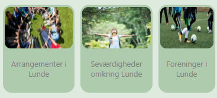

Grids:
Gitter til Kategorier:

.grid-container {
position: relative;
top: 30px;
display: grid;
grid-template-columns: auto auto auto;
grid-gap: 10px;
padding: -40px;
}
Justering af tekst og afstand i gitter:
.grid-container > div {
text-align: center;
padding: 1px 0;
font-size: 30px;
border-radius: 15px;
}
Justering af billedestørrelse i gitter:
.grid-container img {
width: 10px;
height: auto;
border-radius: 10px;
}